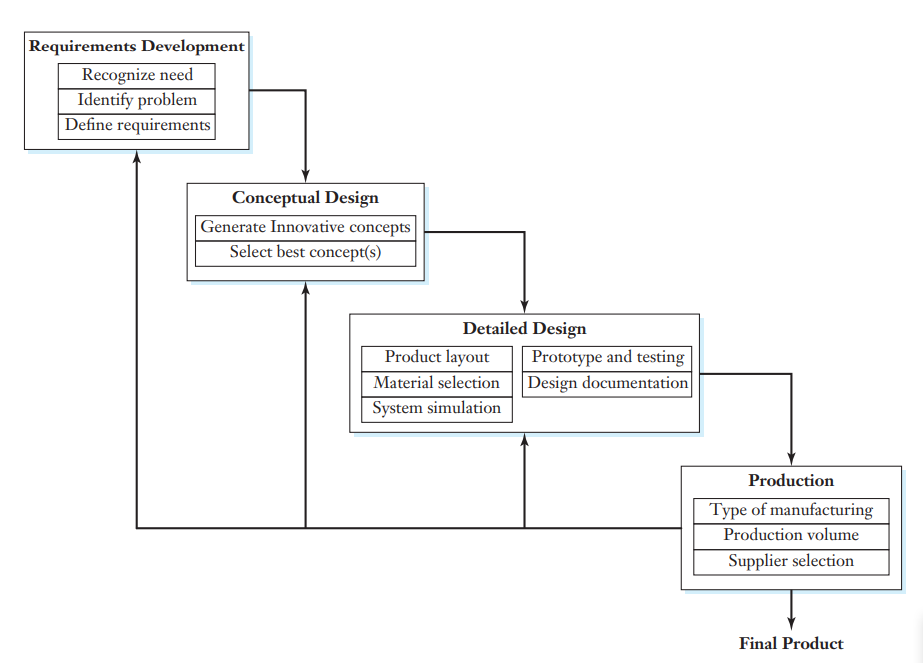
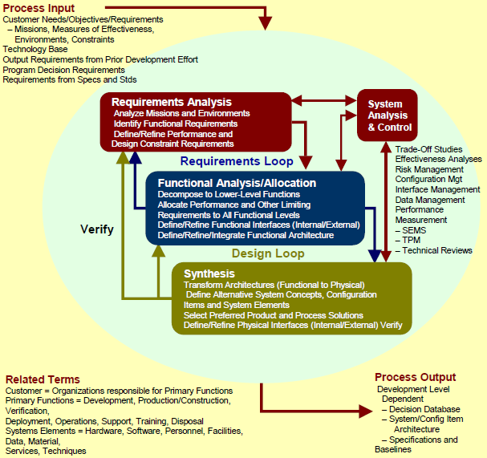
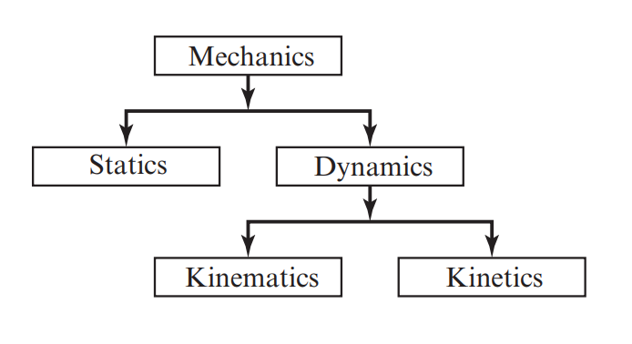

W4-W6 <<
Previous Next >> W7-W9
Engineering
Engineer
Engineers, as practitioners of engineering, are professionals who invent, design, analyze, build and test machines, complex systems, structures, gadgets and materials to fulfill functional objectives and requirements while considering the limitations imposed by practicality, regulation, safety and cost.
The word engineer (Latin ingeniator) is derived from the Latin words ingeniare ("to create, generate, contrive, devise") and ingenium ("cleverness"). The foundational qualifications of an engineer typically include a four-year bachelor's degree in an engineering discipline, or in some jurisdictions, a master's degree in an engineering discipline plus four to six years of peer-reviewed professional practice (culminating in a project report or thesis) and passage of engineering board examinations.
The work of engineers forms the link between scientific discoveries and their subsequent applications to human and business needs and quality of life.
The following paragraph cited from "An Introduction to Mechanical Engineering, Third Edition Jonathan Wickert and Kemper E. Lewis", pp. 4-5, 2013
The word "engineering" derives from the Latin root ingeniere, meaning to design or to devise, which also forms the basis of the word "ingenious."
Those meanings are quite appropriate summaries of the traits of a good engineer.
At the most fundamental level, engineers apply their knowledge of mathematics, science, and materials—as well as their skills in communications and business—to develop new and better technologies.
Rather than experiment solely through trial and error, engineers are educated to use mathematics, scientific principles, and computer simulations as tools to create faster, more accurate, and more economical designs.
In that sense, the work of an engineer differs from that of a scientist, who would normally emphasize the discovery of physical laws rather than apply those phenomena to develop new products. Engineering is essentially a bridge between scientific discovery and product applications.
Engineering does not exist for the sake of furthering or applying mathematics, science, and computation by themselves. Rather, engineering is a driver of social and economic growth and an integral part of the business cycle. With that perspective, the U.S. Department of Labor summarizes the engineering profession as follows:
Engineers apply the theories and principles of science and mathematics to research and develop economical solutions to technical problems. Their work is the link between perceived social needs and commercial applications.
Engineers design products, machinery to build those products, plants in which those products are made, and the systems that ensure the quality of the products and the efficiency of the workforce and manufacturing process.
Engineers design, plan, and supervise the construction of buildings, highways, and transit systems. They develop and implement improved ways to extract, process, and use raw materials, such as petroleum and natural gas. They develop new materials that both improve the performance of products and take advantage of advances in technology.
They harness the power of the sun, the Earth, atoms, and electricity for use in supplying the Nation’s power needs, and create millions of products using power. They analyze the impact of the products they develop or the systems they design on the environment and on people using them. Engineering knowledge is applied to improving many things, including the quality of healthcare, the safety of food products, and the operation of financial systems.

cited from Figure 2.4 - Flowchart of the prototypical mechanical design process ("An Introduction to Mechanical Engineering, Third Edition Jonathan Wickert and Kemper E. Lewis", pp. 41, 2013)
Terminology:
Entrepreneurship
Requirements Development (Requirements DevelopmentRequirements Development Steps.pdf)

(System Engineering Process Overiew)
Recognize needs
Recognizing the Need for Information (source)
Education requires the ability to adapt, problem solve, and think critically about challenges that arise in your classes and career. An educated person can recognize an opportunity to learn and make the most of it.
An important skill to acquire is the ability to acknowledge when you don’t know something and decide what to do about it. In other words, it’s valuable to approach an assignment by asking,
“What do I already know about this?”
“What do I want to know?”
“How do I find the information I need?”
Beyond that, you’ll be able to ask,
“Where will I find the best information to fit my needs?”
“How will I know it when I see it?”
“What do I do with it once I have it?”
All of these questions together are a part of a concept called “Information Literacy,” which you’ll learn about, practice, and apply as you work through these six modules. In this first module, you’ll learn how to recognize the need for information and how to plan for a successful inquiry. Understanding these concepts will prepare you to approach later modules – about finding and using information – with a clear sense of purpose.
Identify problems
Define requirements
Conceptual Design
Generate innovative concepts
Brainstorming
The 5W+H methods (What, Why, When, Who, Where + How)
Reverse thinking
Using analogies
Social Listening
Role playing
Mind mapping
Concept generating
TRIZ (Teoriya Resheniya Izobretatelskikh Zadatch, Theory of Inventive Problem Solving)
Select best concepts
Detailed Design
Prduct layout: A product layout is where the equipment, tools, and machines are located according to how a product is made.
Material selection
System simulation
Prototype and tesing
Design documentation
Production
Type of Manufacturing
Production volume
Supplier selection
Intro_to_engineering.pdf
Kinematics_ kinetics_dynamics_inertia.pdf
Intro_to_mechanics.pdf
engineering_mechanics.pdf
Intro_to_kinematics_and_dynamics.pdf
Engineering (工程)
involves the design and analysis of machines
Engineering (工程): 牽涉機器的設計與分析
Machine (機器)
deal with the conversion of energy from one source to another using the basic principles of science
Machine (機器): 牽涉運用科學基本原理將能量從源頭轉化為另一種(作用)
Mechanics (力學)

a branch of physical science that deals with energy and forces and their effect on bodies (Merriam-Webster Dictionary)
Mechanics(力學): 物理學的一個分支, 牽涉(研究)能量及作用力對物體所造成的影響
contains three major subbranches: kinematics, statics, and kinetics
Mechanics(力學): 包括三個主要分支- 運動學, 靜力學與動理學
Kinematics (運動學)
deals with the study of relative motion
Kinematics(運動學): 涉及相對運動的研究
a branch of dynamics that deals with aspects of motion apart from considerations of mass and force (Merriam-Webster Dictionary)
Kinematics (運動學): 動力學的一個分支, 涉及運動有關的探討, 但並不涉及質量與力
Statics (靜力學)
Statics(靜力學): study of forces and moments apart from motion
Statics (靜力學): 研究力, 力矩與運動(之間的關係)
Kinetics (動理學)
Kinetics (動理學): deals with the result of forces and moments on bodies
Kinetics (動理學): 研究力與力矩對物體造成的結果
a branch of science that deals with the effects of forces upon the motions of material bodies or with changes in a physical or chemical system (Merriam-Webster Dictionary)
Kinetics(動理學): 科學的一個分支, 涉及力對物質運動以及物理或化學系統變化所造成的影響
Dynamics (動力學) = Kinematics (運動學) + Kinetics (動理學)
Dynamics(動力學): deals with the study of motion caused by forces and torque
Dynamics(動力學): 研究力與扭矩所造成的運動
a branch of mechanics that deals with forces and their relation primarily to the motion but sometimes also to the equilibrium of bodies (Merriam-Webster Dictionary)
Dynamics(動力學): 力學的一個分支, 主要處理力及其與運動的關係, 有時並涉及物體的平衡
Mechanism design (機構設計)
the desired motion is known and the task is to determine the type of mechanism along with the required forces and torques to produce the desired motion
已知所需的運動, (設計)任務是確定機構的類型以及所需的力和扭矩得以產生所需的運動
W4-W6 <<
Previous Next >> W7-W9